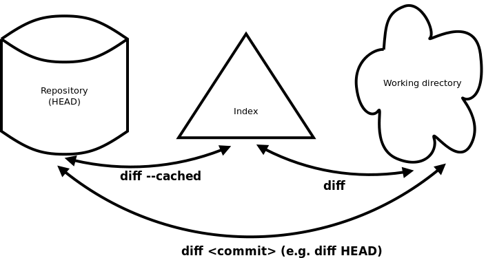

Git: una guía concisa
Una guía concisa para atreverte con git. sin muchas complicaciones, solo algunas.

Configuración
Una vez descargado git. doble click y a todo que 'si' sin pensar.
Los problemas ya los arregalaras después
Flujo de trabajo
Crea un repositorio nuevo
Crea una carpeta nueva, ábrela y pulsa boton derecho.
Busca la opcion y clickea en:
Se abrira la terminal de git.
Inicializa tu primer repositorio mediante el comando.
Clonar un repositorio
Aqui creamos mediante comando una copia local del repositorio que queramos clonar.
Se abrira la terminal de git.
Inicializa tu primer repositorio mediante el comando
Los "arbolitos" de git.
Tu repositorio local tiene tres "arbolitos" administrados por git.
El primero es tu que tiene los archivos, el segundo es el que es como un agujero negro, una paradoja espacio temporal, al más puro estilo de 'Interestelar', y el último es el donde quedan los commit registrados.
add & commit
Para registrar cambios (añadirlos al stagin area) usamos:
Este es el primer paso, despues para hacer commit a estos usamos:
Ahora el archivo esta en el HEAD pero no en tu repositorio
Envío de cambios
Los cambios estan en el 'HEAD' de la copia local.
Para enviarlos usamos:
Y asi tendremos todo en el repositorio en la 'nube'
Ramas
Las ramas se usan para desarrollar de fomra aislada unas de otras. Siendo la rama 'master' o 'main' la ramas 'por defecto' cuando creamos un repositorio.
Para enviarlos usamos:
Y asi tendremos todo en el repositorio en la 'nube'.

Creamos nuevas llamada 'la_ramita' ramas y hacemos checkout a ella usando:
Volvemos a al principal usando:
Y la borramos usando:
Una rama no estara disponible para los demas a no ser que la subas a repositorio en la 'nube'.
Actualiza Y fusiona
Para actualizar nuestro repos. local al commit más nuevo, usamos:
en nuestro directorio de trabajo o 'working directory' para bajar y fusionar los cambios en el repos. remoto.
Para fusionar otra rama a tu rama activa (la master por ejemplo), usamos:
Para ello nos aseguramos que estamos en la rama correcta, que seria en este caso en la que queremos trabajar.
En ambos csos de 'pull' y 'merge' git intenta fusionar automáticamente los cambios. No siempre sera posible y se produciran aquellas veces que no lo es, 'conflictos'. Nosotros somos los responsable de fusionar eso 'conflictos' manualmente al editar los archivos mostrados por git. Despés de ellos es necesario marcarlos como fusiionados con un 'add'.
Antes de fusionar los cambios se pueden revisar usando: